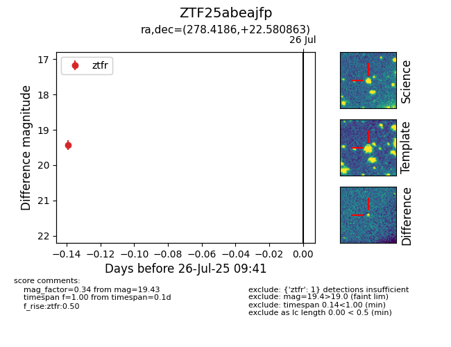

Target ZTF25abeajfp at 2025-07-26 09:41, see:
FINK: fink-portal.org/ZTF25abeajfp
Lasair: lasair-ztf.lsst.ac.uk/objects/ZTF25abeajfp
ALeRCE: alerce.online/object/ZTF25abeajfp
alt names
ZTF25abeajfp (ztf,fink)
coordinates:
equatorial (ra, dec) = (278.4186,+22.58086)
galactic (l, b) = (51.4949,+13.81110)
photometry
last ztfr=19.43
1 ztfr detections
